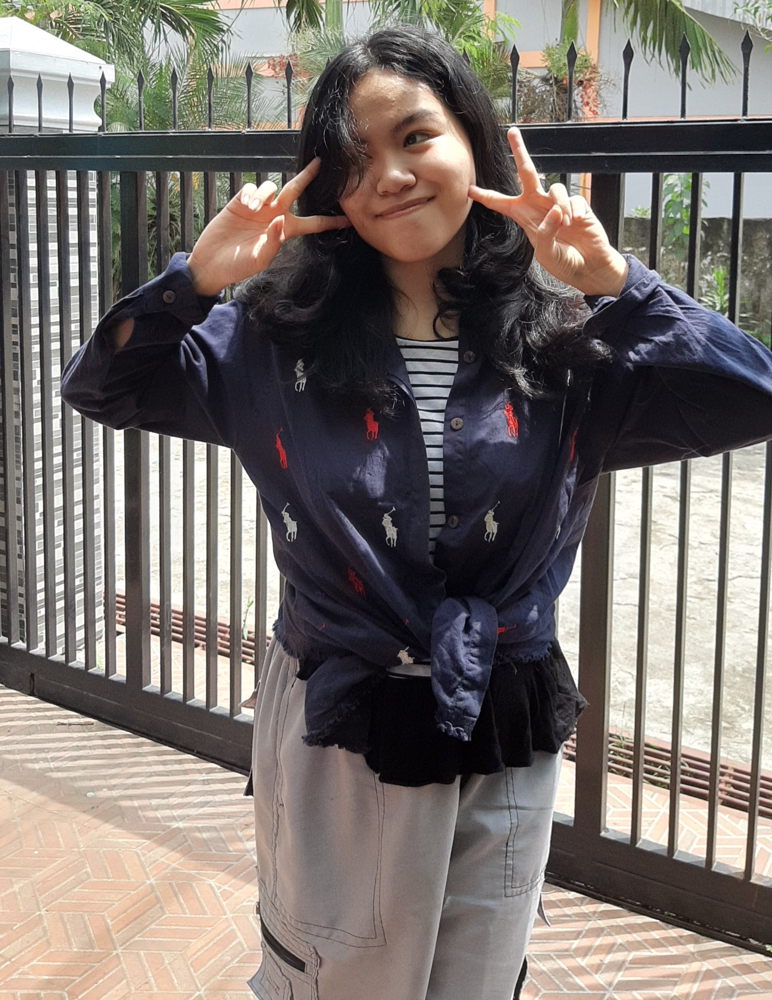

Konsep Singkat
Dengan menerapkan pengetahuan dot product dalam cosine similarity, kita dapat membuat sebuah mesin pencari yang mampu melihat kesamaan antara isi file yang kita unggah dengan search query yang kita masukkan dan mengurutkannya sesuai file yang paling mirip dengan search query yang dimasukkan oleh pengguna. Mesin pencari ini dapat dibuat dengan menggunakan bahasa Python dan memanfaatkan HTML untuk membuat halaman web.
HOW TO USE
- Upload file pada bagian atas
- Isi query yang ingin di cari pada text box
- Web akan melakukan pencarian terhadap dokumen dari file yang diupload untuk ditampilkan berdasarkan yang paling relevan
- Untuk membuka dokumen, klik pada judul yang berwarna biru
Anggota Kelompok
